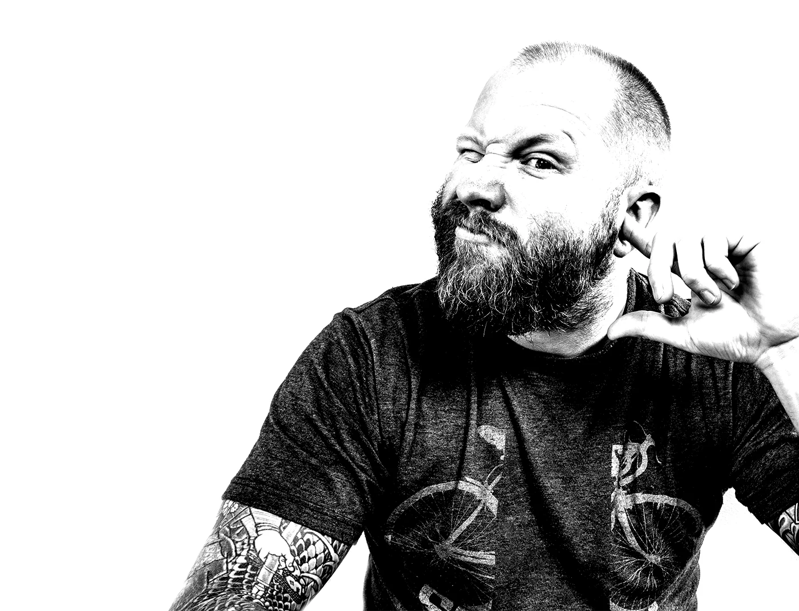

20+ years of designing products, and I still like the messy part best. I’m a design lead working on Otto, ServiceNow’s conversational AI platform, where the job is making AI genuinely useful inside very complicated enterprise software. Give me a fuzzy problem and I’ll dig into what’s really going on, pull in the right people, and turn rough ideas into something we can actually build.
